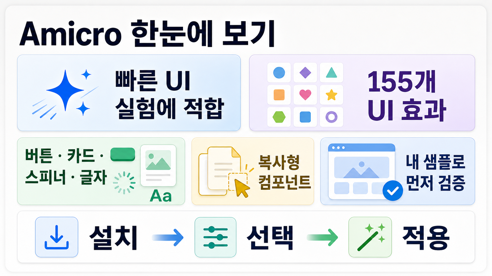

GitHub Repo Infographic Report
Amicro는 무엇을 도와주나?
Subhan-code/Amicro--Micro-transitions-는 React 화면에 버튼, 카드, 로더, 텍스트 전환 같은 작은 UI 움직임을 빠르게 붙일 수 있게 해주는 Motion 기반 컴포넌트/레지스트리 모음입니다.
React · TypeScriptMotion 기반shadcn식 레지스트리MIT License
155registry/ui JSON 컴포넌트
875GitHub stars 확인
1.0.1npm 패키지 버전
통과npm run lint · build